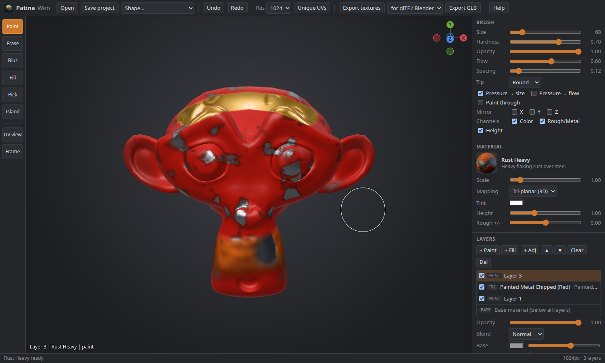
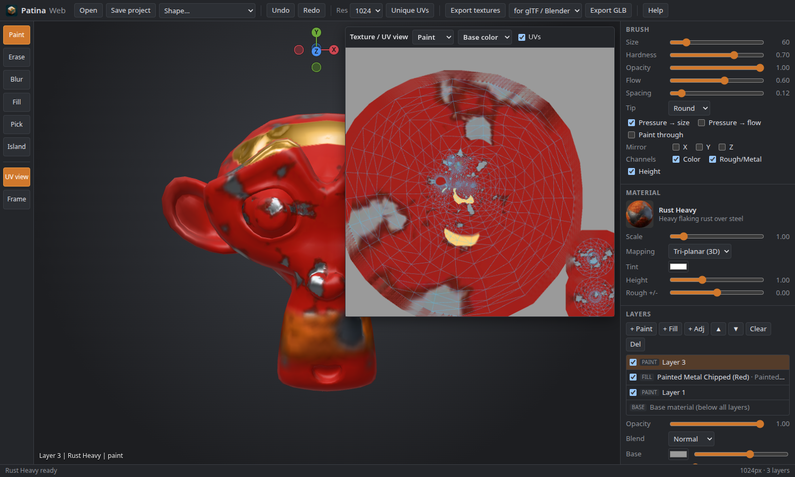
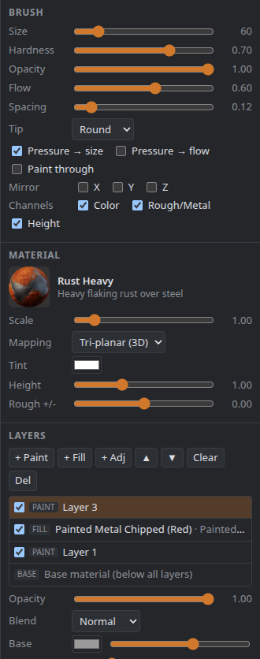
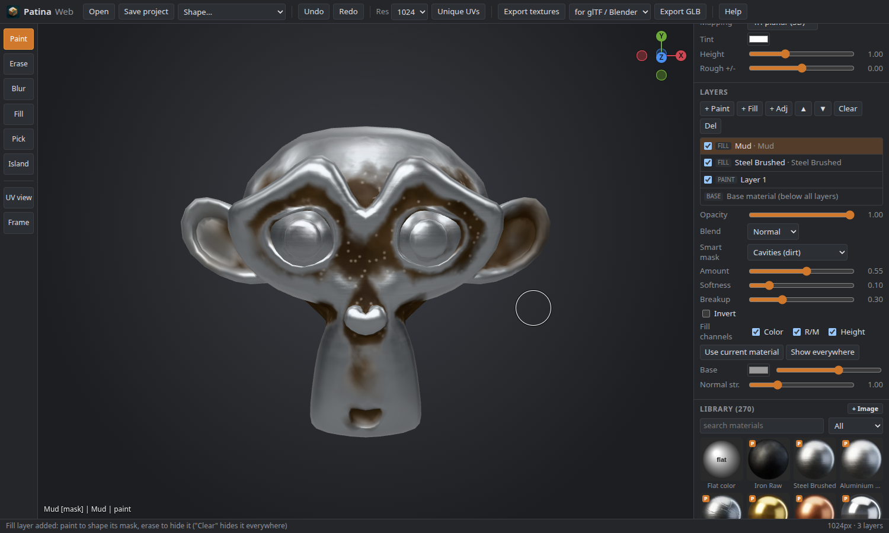
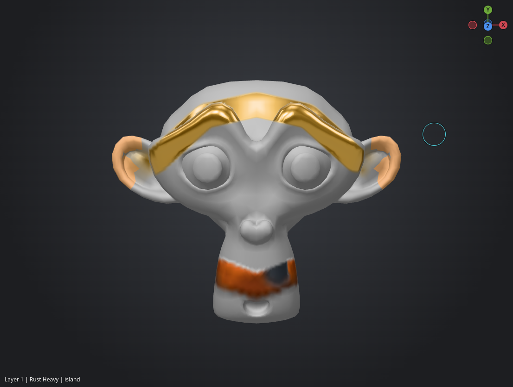
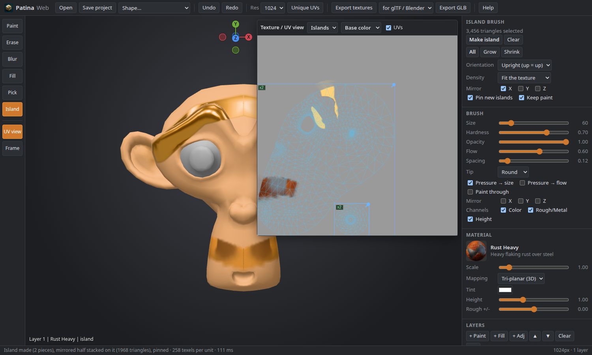
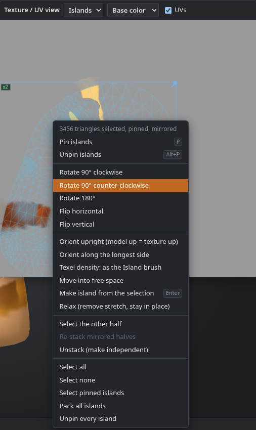

Patina Web
Patina Web is a lightweight version of the painter built with three.js. It runs in any modern browser, with nothing to install and no internet connection needed.

Opening it
- From Patina: Help › Patina Web (Browser Painter).
- Directly: open
web/index.htmlfrom the download (on Linux afterinstall.sh:~/.local/share/patina/web/index.html). Double-clicking the file works, and no web server is needed. - To share it, copy the whole
webfolder to any static web host.
It needs a browser with WebGL 2: Firefox, Chrome, Edge or Safari 15+.
What it does
- Paints the same 270
patina_*library materials, projected in 3D independently of the UVs, just like the desktop app. + Image in the library turns any photo or texture into a material of your own. - Tools: Paint, Erase, Blur, Fill and Pick, plus the Island brush. The brush has size, hardness, flow, spacing, round / square / spray / grunge tips, pen pressure, paint-through, channel toggles (color, rough/metal, height) and Mirror X / Y / Z.
- Layers: paint layers, fill layers and adjustment layers, each with opacity, a blend mode and a mask. Fill and adjustment layers can use a smart mask.
- A texture / UV view that shows the maps with the UV wireframe. You can paint there in texture space.
- Opens
.glb, self-contained.gltf,.obj,.fbx(FBX 7, from 2011 on; the desktop app also reads the older FBX 6),.stland.3mf. Includes built-in shapes and the Suzanne sample. - The Island brush: paint over a part of the model and it becomes one UV island, with mirroring, orientation, texel density and pinning, plus a right-click menu in the UV view with Relax and shape packing.
- Unique UVs: one click gives a model that has no UVs, or overlapping UVs, a clean per-triangle layout. Your paint is carried over.
- Projects: Save project keeps everything in one
.patinawebfile. - Exports maps up to 4096 pixels for glTF / Blender, Unreal (ORM, DirectX normal) or Unity
(metallic-smoothness, OpenGL normal) as a
.zip, or a textured.glb.


Tools
- Blur (R) softens what is already painted on the current layer, under the brush. Blur radius sets how far it reaches.
- Fill (P) fills with a click. Fill chooses how much: one Triangle, its UV island, the Connected part of the mesh, or the Whole model. With Mirror X / Y / Z on, the other side is filled too. On a fill or adjustment layer it fills the mask.
- Pick (I) reads the color, roughness and metallic under the cursor into the flat color. Hold I and click to pick without leaving the brush; tap I to pick once and return.
- Mirror X / Y / Z paints the mirrored position too, across the model's own axes. It works with Paint, Erase, Blur and Fill.
Layers and smart masks
+ Paint, + Fill and + Adj add layers. An adjustment layer changes everything below it: hue, saturation, brightness, contrast, and roughness and metallic offsets. Every layer has an opacity and a blend mode: normal, multiply, screen, overlay, add, soft light, darken or lighten.
Fill and adjustment layers can use a smart mask, computed from the shape of the model:

| Mask | Covers |
|---|---|
| Edges (wear) | Convex edges and corners, where paint wears first |
| Cavities (dirt) | Creases and hollows, where dirt gathers |
| Facing up (dust, snow) | Faces that point up, where dust and snow settle |
| Height gradient | A fade from the bottom of the model to the top |
| Noise | Cloudy patches in 3D |
Amount sets how much it covers, Softness blurs its edge, Breakup roughens the edge with noise and Invert flips it. The smart mask is multiplied with the painted one, so erasing on the layer hides parts of it and painting brings them back.
Projects
Save project (Ctrl+S) downloads a .patinaweb file with the model, its UVs,
the island pins and mirror links, every layer with its settings, and the image materials you added. Open it again with
Open (Ctrl+O) or by dropping it on the window; the layers come back exactly as they were
saved. The file is a zip, with the layers as PNG files.
Desktop .patina projects and .patinaweb projects are separate formats. To move work between them,
export the maps or a GLB.
Island brush
The Island brush works like the one in the desktop app (see UV editing). Pick Island (L), paint over a part of the model, and press Enter or Make island. The painted triangles become one UV island:
- Unwrapped flat (least-squares conformal). A closed part, such as a whole head, is split into pieces first.
- Oriented: Upright turns the model's up direction to the texture's up. Longest side lines it up with the texture's width. Keep leaves it as unwrapped.
- Scaled to a texel density: Automatic or Match the layout gives it the density of the rest of the UVs, Fit the texture makes it as big as the free space allows, and Custom sets texels per unit.
- Placed in free space. If nothing fits, the unpinned islands are packed again around the pinned ones.
- Mirrored with Mirror X / Y / Z: the other half is selected too, and it gets the same UVs, stacked on the first half, so both sides share the texels. The halves stay linked: moving either moves both.
- Pinned (Pin new islands), so later edits leave it where it is. Pin and Unpin under Make island pin or unpin the painted region's islands, and Alt+P unpins over the 3D view. While the Island brush is chosen, pinned islands have blue stripes on the model.
- With Keep paint on, the paint moves with the UVs and nothing changes on the model. It is one undo step.
Hold Ctrl while painting to remove triangles. A selects everything, Alt+A nothing, and Ctrl+= / Ctrl+- grow or shrink the region by a ring of triangles.


Islands in the UV view
Switch the UV view's mode from Paint to Islands. A click selects an island, Shift adds and Ctrl removes, and dragging on empty space draws a box. Dragging a selected island moves it, along with its mirrored half. Pinned islands don't move: P pins and Alt+P unpins. Right-click for everything else: rotate and flip, orient, set the density, move into free space, select the other half, re-stack or unstack mirrored halves, select pinned islands, and pack all islands.

Controls
| Action | Input |
|---|---|
| Paint / erase / blur | Left mouse · B / E / R |
| Fill | P, then click |
| Pick a color | Hold I and click, or tap I for one pick |
| Orbit | Alt + left drag, or middle drag |
| Pan / zoom | Right drag / mouse wheel |
| Look along an axis | Click X, Y or Z in the axis gizmo (top right corner); the end facing you again for the other side; drag there to orbit |
| Brush size | [ ], or Ctrl + wheel |
| Straight line | Shift+click |
| Undo / redo | Ctrl+Z / Ctrl+Shift+Z |
| Open / save project | Ctrl+O / Ctrl+S |
| UV view / frame | U / F |
| Island brush / make the island | L / Enter (Ctrl + paint removes) |
| Island brush: all / none / grow / shrink | A / Alt+A / Ctrl+= / Ctrl+- |
| Pin / unpin islands (UV view, Islands mode) | P / Alt+P, right-click for more |
| Unpin the painted islands (3D view, Island brush) | Alt+P |
Compared with the desktop app
Patina Web is the lighter of the two. It has the same painting model and most of the everyday tools, in a simpler interface.
| Desktop | Web | |
|---|---|---|
| Material painting, independent of the UVs | ✓ | ✓ |
| Paint, fill and adjustment layers, blend modes, painted masks | ✓ | ✓ |
| Smart masks | Baked per texel: AO, curvature, thickness | Per vertex: edges, cavity, up, gradient, noise |
| Blur, polygon fill, color picker, mirror painting | ✓ | ✓ |
| Clone, smudge | ✓ | – |
| Island brush: mirroring, orientation, density, pinning | ✓ | ✓ |
| Island brush along the surface (Surface) | ✓ | – (the faces seen in the circle) |
| Relax, shape packing | ✓ | ✓ |
| Seam brush, unwrap methods (cylinder, sphere, smart project), weld, align, stretch maps | ✓ | – |
| Texture sets per material slot, UDIM tiles | ✓ | – |
| Your own materials | Material editor, smart materials | From an image |
| Projects | .patina | .patinaweb |
| Blender bridge, MCP | ✓ | – |
| Export | 4 presets, up to 8K | 3 presets or GLB, up to 4K |
Gotchas
.patinaweb file. The exported GLB has the new UVs, but no pins.